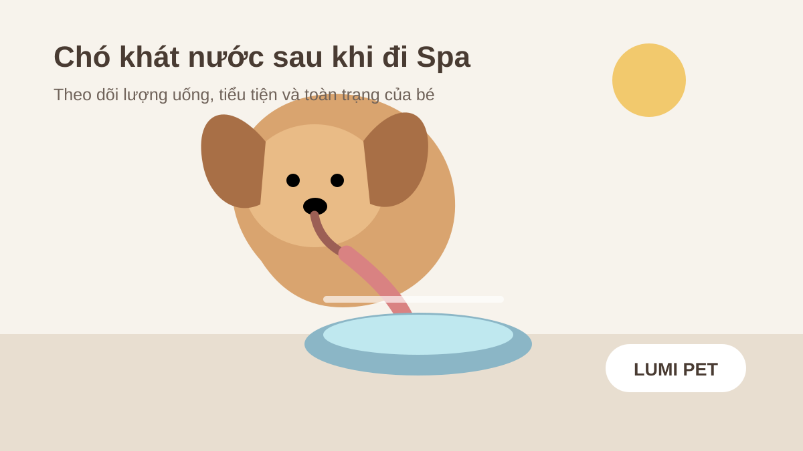

Chó khát nước sau khi đi Spa: khi nào bình thường, khi nào cần lưu ý?
Trả lời nhanh: nếu chó đi Spa về uống nước nhiều hơn một lần nhưng vẫn tỉnh táo, thở bình thường, đi lại ổn và sau đó trở lại thói quen quen thuộc, bạn có thể tiếp tục theo dõi. Tuy nhiên, khát nước tăng rõ rệt hoặc kéo dài không nên mặc định là do grooming. Nếu bé đồng thời tiểu nhiều, nôn, tiêu chảy, yếu, lừ đừ, bỏ ăn hoặc có biểu hiện khác thường, hãy liên hệ bác sĩ thú y.

Vì sao chó có thể uống nước nhiều hơn sau Spa?
Một buổi Spa có thể gồm di chuyển, chờ đợi, tắm, sấy, chải và cắt tỉa. Sau khi về nhà, một số bé tìm tới bát nước ngay. Chỉ riêng thời điểm “sau Spa” không chứng minh Spa là nguyên nhân của cơn khát; điều hữu ích hơn là so sánh với mức uống nước thường ngày của chính bé.
Bé chưa uống nhiều trong lúc ở ngoài nhà
Thói quen uống nước thay đổi theo môi trường. Một chú chó mải quan sát hoặc chưa quen nơi mới có thể uống ít hơn bình thường rồi uống bù khi trở về nhà. Nếu sau đó bé sinh hoạt bình thường và mức uống trở lại như cũ, tiếp tục theo dõi thường hữu ích hơn việc tự chẩn đoán.
Căng thẳng và hoạt động có thể làm thói quen thay đổi
Di chuyển, đứng trên bàn grooming và tiếp xúc với âm thanh hoặc người lạ tạo ra một ngày khác thường. Nhưng nếu tình trạng khát tăng kéo dài, cần nhìn rộng hơn thay vì gán cho stress.
Khát nước cũng có thể không liên quan đến Spa
VCA lưu ý tăng khát và tăng tiểu có nhiều nguyên nhân, trong đó có bệnh thận, bệnh gan, đái tháo đường, một số rối loạn nội tiết, thuốc và các vấn đề khác. Vì vậy, nếu bạn thấy bé liên tục tìm nước và đi tiểu nhiều hơn, hãy ghi lại thông tin để bác sĩ thú y đánh giá.
Checklist theo dõi chó khát nước sau khi đi Spa
1. So với thói quen thường ngày
Bé chỉ uống một bát sau khi về hay quay lại uống liên tục? Bát nước có cạn nhanh bất thường không? Nếu trong nhà có nhiều thú cưng, tách bát trong thời gian theo dõi sẽ giúp biết chính xác bé nào đang uống.
2. Theo dõi tiểu tiện
Uống nhiều đi cùng tiểu nhiều là dữ kiện quan trọng. Ghi lại số lần đi tiểu, việc đòi ra ngoài thường xuyên hơn, tiểu trong nhà bất thường hoặc lượng nước tiểu thay đổi. VCA cho biết đo lượng nước uống trong 24 giờ có thể giúp bác sĩ đánh giá mức độ vấn đề.
3. Quan sát toàn trạng
Bé có vui vẻ, phản ứng khi gọi, đi lại vững và thở bình thường không? Nếu khát nước đi cùng mệt hoặc lừ đừ sau Spa, thông tin đó đáng chú ý hơn một cơn khát đơn độc.
4. Kiểm tra nôn và tiêu chảy
Nôn hoặc tiêu chảy có thể làm mất nước. VCA lưu ý mất nước là mối quan tâm khi nôn hoặc tiêu chảy kéo dài. Nếu bé có triệu chứng tiêu hóa, xem thêm hướng dẫn về chó nôn sau Spa và chó tiêu chảy sau Spa.
5. Ghi lại thuốc và bệnh nền
Một số thuốc có thể làm tăng uống và tăng tiểu. Nếu bé đang dùng thuốc hoặc có bệnh nền, đừng thay đổi liều hay ngưng thuốc chỉ vì thấy uống nước nhiều; hãy báo bác sĩ thú y đang theo dõi bé.
Khi nào chó khát nước sau Spa cần được đánh giá?
Không có một con số duy nhất trong bài này để tự chẩn đoán cho mọi chó. VCA khuyến nghị lịch sử bệnh, khám lâm sàng và khi cần các xét nghiệm như máu, sinh hóa và nước tiểu để tìm nguyên nhân tăng khát/tăng tiểu.
Nên liên hệ bác sĩ thú y nếu cơn khát tăng rõ rệt so với nền bình thường và kéo dài, hoặc đi cùng tiểu nhiều, nôn, tiêu chảy, bỏ ăn, giảm cân, yếu, lừ đừ, đau hay thay đổi hành vi. Nếu bé khó thở, ngã quỵ, co giật, bụng chướng, nôn khan liên tục hoặc nghi ăn/uống phải chất độc, cần đánh giá khẩn cấp.
Đặc biệt, đừng dùng việc vừa đi Spa làm lý do trì hoãn khám. Một bệnh lý có thể tình cờ biểu hiện cùng ngày với buổi grooming.
Nên làm gì khi chó về nhà uống nước liên tục?
Cho tiếp cận nước sạch
Không tự ý cắt nước kéo dài để “thử xem còn khát không”. Nước sạch nên sẵn có. Nếu bé uống quá nhanh rồi nôn, đang có bệnh nền hoặc bác sĩ từng yêu cầu kiểm soát lượng nước, hãy gọi bác sĩ để được hướng dẫn riêng.
Để bé nghỉ ở nơi mát và yên tĩnh
Sau grooming, cho bé trở lại nhịp sinh hoạt quen thuộc. Tránh ép vận động mạnh ngay khi bé vừa về nhà nếu đang mệt hoặc khát.
Ghi chép thay vì đoán nguyên nhân
Ghi giờ uống, lượng nước thêm vào bát, số lần tiểu và triệu chứng đi kèm. Thông tin này có giá trị hơn mô tả chung “uống rất nhiều”.
Không tự dùng thuốc
Không cho thuốc của người, thuốc lợi tiểu, thuốc nội tiết hoặc các sản phẩm “giải độc” để xử lý khát nước khi chưa có chỉ định thú y.
Chuẩn bị gì cho lần Spa sau?
Khi đặt lịch Spa, hãy báo trước nếu bé có bệnh thận, đái tháo đường, bệnh nội tiết, đang dùng thuốc, có tiền sử nôn/tiêu chảy hoặc từng thay đổi uống nước rõ sau grooming. Bạn cũng có thể trao đổi với Lumi Pet về tình trạng hiện tại trước khi chọn dịch vụ Spa thú cưng hoặc grooming chó mèo.
Câu hỏi thường gặp
Chó đi Spa về uống nhiều nước có chắc là do nóng hoặc máy sấy?
Không. Thời điểm xuất hiện sau Spa không đủ để xác định nguyên nhân. Hãy theo dõi lượng uống, tiểu tiện và toàn trạng.
Có nên cho chó uống thật nhiều một lần?
Hãy để nước sạch sẵn có. Nếu bé có xu hướng uống quá nhanh rồi nôn hoặc có bệnh cần kiểm soát nước, hỏi bác sĩ thú y cách cho uống phù hợp.
Khát nước kèm tiểu nhiều có đáng lo?
Có thể cần đánh giá nếu thay đổi rõ so với bình thường hoặc kéo dài. Tăng khát và tăng tiểu có nhiều nguyên nhân nên không nên tự chẩn đoán tại nhà.
Bài liên quan
Chó mệt sau khi đi Spa có bình thường không? · Chó nôn sau khi đi Spa · Chó tiêu chảy sau khi đi Spa · Checklist trước khi đặt lịch Spa
Nguồn tham khảo y khoa: VCA Animal Hospitals, “Testing for Increased Thirst and Urination”, “Common Emergencies in Dogs” và “Vomiting in Dogs”. Nội dung nhằm hỗ trợ nhận biết và chuẩn bị thông tin, không thay thế chẩn đoán thú y.